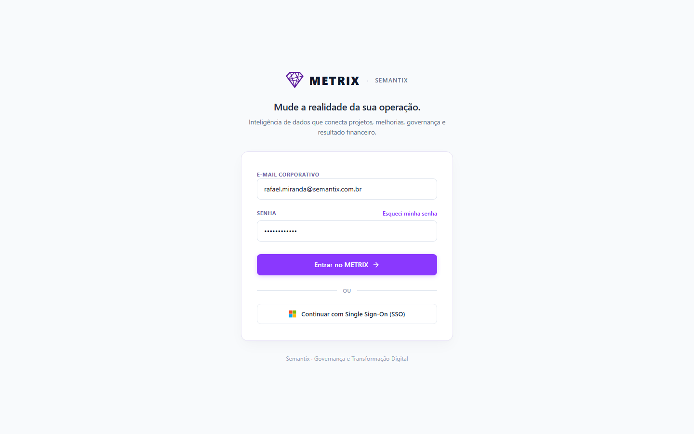
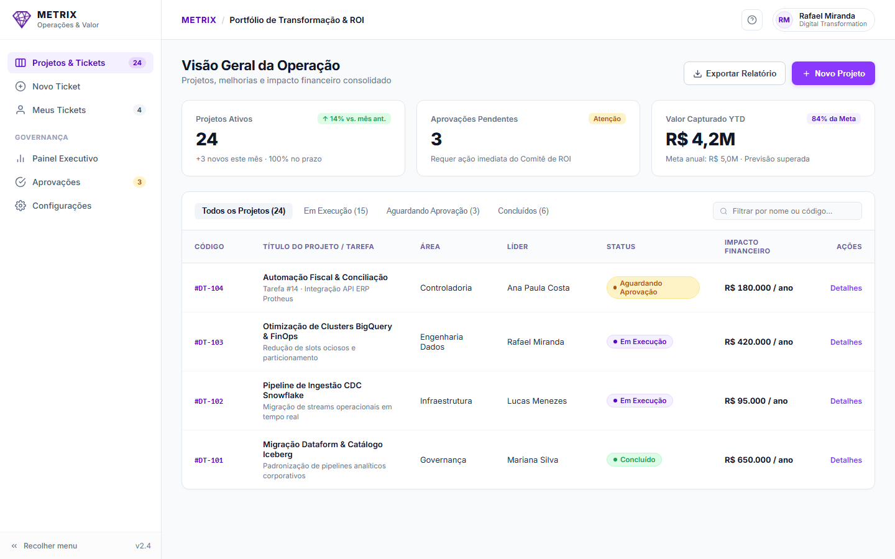
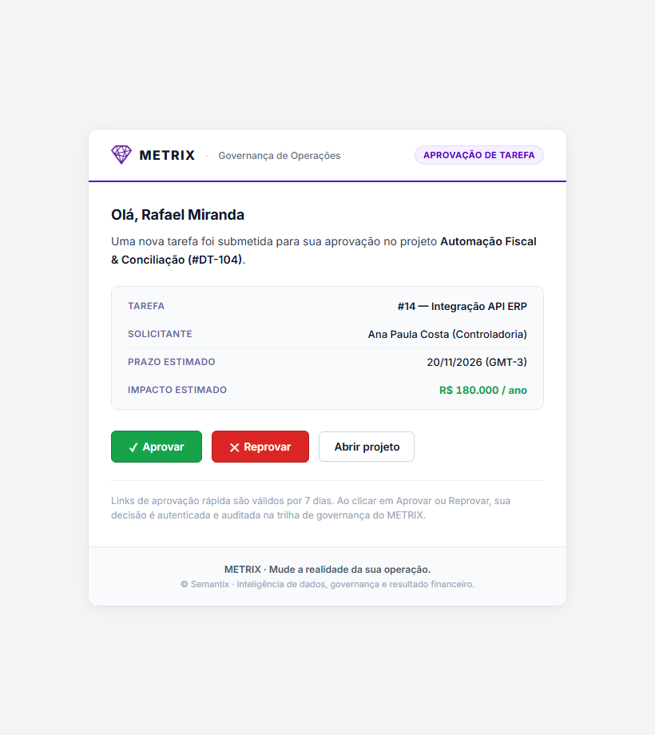
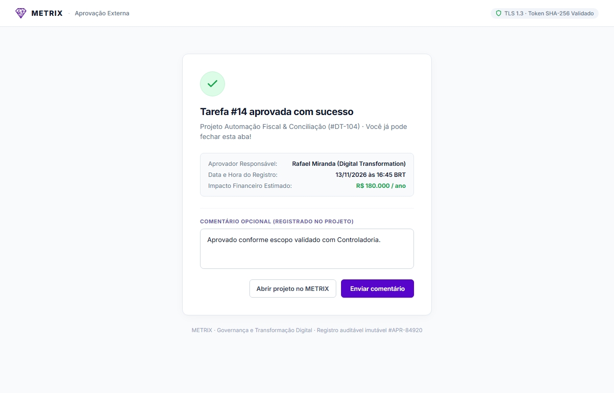

Mude a realidade da sua operação.
Inteligência de dados que conecta projetos, melhorias, governança e resultado financeiro.
Contexto & Racional de Design
A evolução de uma percepção reativa de "chamados de TI" para uma plataforma estratégica de inteligência operacional que comprova retorno sobre investimento para a liderança.
- Percepção transacional de abertura passiva de chamados operacionais.
- Identidade visual utilitária sem diferenciação para tomadores de decisão.
- Foco exclusivo em status de tarefas individuais sem ligação com ROI.
- Experiência visual fragmentada entre telas internas e e-mails de alerta.
- Posicionamento de suíte executiva para orquestração de valor e eficiência.
- Linguagem visual proprietária alinhada aos tokens de marca Semantix.
- Visibilidade direta de impacto financeiro, SLAs e entregas de negócio.
- Consistência contínua do primeiro e-mail à aprovação final com 1 clique.
Superfícies límpidas, densidade balanceada e remoção de ruídos visuais para foco estrito na tomada de decisão gerencial.
Tipografia estruturada com Inter e Plus Jakarta Sans, garantindo escaneabilidade instantânea e contraste WCAG AAA.
Adoção rigorosa da paleta oficial Semantix (#8A38FE, #5705CB, #E8D7FF) com harmonia tonal e estados de interação refinados.
Experiência de Entrada (Login)
O primeiro ponto de contato transmite solidez institucional, clareza e credibilidade corporativa imediata antes mesmo do usuário autenticar.

Workspace & Operação (App Shell)
Ambiente unificado projetado para alta produtividade diária, com navegação estruturada, visibilidade contextual e métricas de impacto direto.

Fluxo de Governança (E-mail & Decisão 1-Clique)
Eliminação de gargalos burocráticos: notificações executivas por e-mail bulletproof combinadas com decisão em 1 clique sem fricção.

• Compatibilidade 100% testada em Outlook Desktop (Word Engine), OWA e Mobile.
• Resumo executivo com dados essenciais: Solicitante, Impacto e Valor Financeiro.
• CTA direto e seguro "Revisar e Aprovar no METRIX" para deliberação executiva imediata.

• Token de segurança criptografado com expiração automática por política corporativa.
• Interface limpa e responsiva que dispensa login prévio para agilizar aprovação de lideranças.
• Confirmação visual em tempo real com trilha de auditoria completa gravada no backend.
Mapa de Alterações & Plano de Rollout
Mapeamento exato dos 8 arquivos afetados pela refatoração de marca e a estratégia de implantação progressiva sem interrupção operacional.
| Escopo | Arquivo / Componente | Modificação Planejada |
|---|---|---|
| Frontend | frontend/src/app/layout.tsx | Metadata global, title "METRIX · Operações & Valor", favicon e OpenGraph. |
| Frontend | frontend/src/app/login/page.tsx | Rebranding da tela de entrada, símbolo Semantix e copy corporativo de valor. |
| Frontend | frontend/src/layouts/sidebar.tsx | Header da barra lateral atualizado com logotipo METRIX e categorização de módulos. |
| Frontend | frontend/src/layouts/topbar.tsx | Breadcrumbs integrados ao nome METRIX, busca global e fallback de responsividade. |
| Frontend | frontend/src/app/aprovar/[token]/page.tsx | Interface de aprovação de demandas adaptada aos tokens e paleta METRIX. |
| Frontend | frontend/src/app/aprovar-tarefa/[token]/page.tsx | Fluxo de aprovação de tarefas técnicas alinhado à nova identidade visual. |
| Frontend | frontend/src/components/common/access-denied-barrier.tsx | Tela de barreira de acesso padronizada com voz institucional METRIX. |
| Backend | backend/notifications/templates_emails.py | Templates HTML de e-mails transacionais com assinatura Semantix METRIX. |
Deploy dos novos templates de e-mail e telas públicas de aprovação para validação com gestores chave.
Atualização do Login, Sidebar, Topbar e Layout base no ambiente de homologação e equipe interna.
Lançamento para 100% dos usuários com telemetria ativa, documentação oficial e comunicação corporativa.